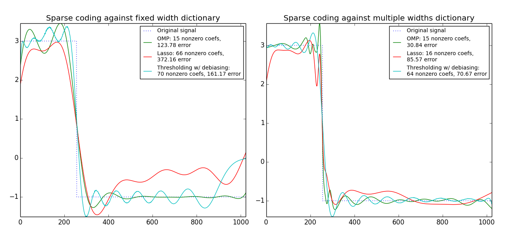

Sparse coding with a precomputed dictionary¶
Transform a signal as a sparse combination of Ricker wavelets. This example visually compares different sparse coding methods using the sklearn.decomposition.SparseCoder estimator. The Ricker (also known as mexican hat or the second derivative of a gaussian) is not a particularly good kernel to represent piecewise constant signals like this one. It can therefore be seen how much adding different widths of atoms matters and it therefore motivates learning the dictionary to best fit your type of signals.
The richer dictionary on the right is not larger in size, heavier subsampling is performed in order to stay on the same order of magnitude.
Python source code: plot_sparse_coding.py
print(__doc__)
import numpy as np
import matplotlib.pylab as pl
from sklearn.decomposition import SparseCoder
def ricker_function(resolution, center, width):
"""Discrete sub-sampled Ricker (mexican hat) wavelet"""
x = np.linspace(0, resolution - 1, resolution)
x = ((2 / ((np.sqrt(3 * width) * np.pi ** 1 / 4)))
* (1 - ((x - center) ** 2 / width ** 2))
* np.exp((-(x - center) ** 2) / (2 * width ** 2)))
return x
def ricker_matrix(width, resolution, n_components):
"""Dictionary of Ricker (mexican hat) wavelets"""
centers = np.linspace(0, resolution - 1, n_components)
D = np.empty((n_components, resolution))
for i, center in enumerate(centers):
D[i] = ricker_function(resolution, center, width)
D /= np.sqrt(np.sum(D ** 2, axis=1))[:, np.newaxis]
return D
resolution = 1024
subsampling = 3 # subsampling factor
width = 100
n_components = resolution / subsampling
# Compute a wavelet dictionary
D_fixed = ricker_matrix(width=width, resolution=resolution,
n_components=n_components)
D_multi = np.r_[tuple(ricker_matrix(width=w, resolution=resolution,
n_components=np.floor(n_components / 5))
for w in (10, 50, 100, 500, 1000))]
# Generate a signal
y = np.linspace(0, resolution - 1, resolution)
first_quarter = y < resolution / 4
y[first_quarter] = 3.
y[np.logical_not(first_quarter)] = -1.
# List the different sparse coding methods in the following format:
# (title, transform_algorithm, transform_alpha, transform_n_nozero_coefs)
estimators = [('OMP', 'omp', None, 15), ('Lasso', 'lasso_cd', 2, None), ]
pl.figure(figsize=(13, 6))
for subplot, (D, title) in enumerate(zip((D_fixed, D_multi),
('fixed width', 'multiple widths'))):
pl.subplot(1, 2, subplot + 1)
pl.title('Sparse coding against %s dictionary' % title)
pl.plot(y, ls='dotted', label='Original signal')
# Do a wavelet approximation
for title, algo, alpha, n_nonzero in estimators:
coder = SparseCoder(dictionary=D, transform_n_nonzero_coefs=n_nonzero,
transform_alpha=alpha, transform_algorithm=algo)
x = coder.transform(y)
density = len(np.flatnonzero(x))
x = np.ravel(np.dot(x, D))
squared_error = np.sum((y - x) ** 2)
pl.plot(x, label='%s: %s nonzero coefs,\n%.2f error'
% (title, density, squared_error))
# Soft thresholding debiasing
coder = SparseCoder(dictionary=D, transform_algorithm='threshold',
transform_alpha=20)
x = coder.transform(y)
_, idx = np.where(x != 0)
x[0, idx], _, _, _ = np.linalg.lstsq(D[idx, :].T, y)
x = np.ravel(np.dot(x, D))
squared_error = np.sum((y - x) ** 2)
pl.plot(x,
label='Thresholding w/ debiasing:\n%d nonzero coefs, %.2f error' %
(len(idx), squared_error))
pl.axis('tight')
pl.legend()
pl.subplots_adjust(.04, .07, .97, .90, .09, .2)
pl.show()
Total running time of the example: 0.63 seconds ( 0 minutes 0.63 seconds)